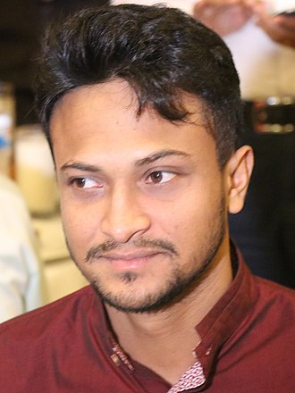

সাকিব আল হাসান; born 24 March 1987), is a Bangladeshi international cricketer. He is widely considered to be one of the greatest all-rounders of all time.[3][4][5][6] His aggressive left-handed batting style in the middle order, controlled slow left-arm orthodox bowling has made him a consistent player for Bangladesh.[7][8][9]